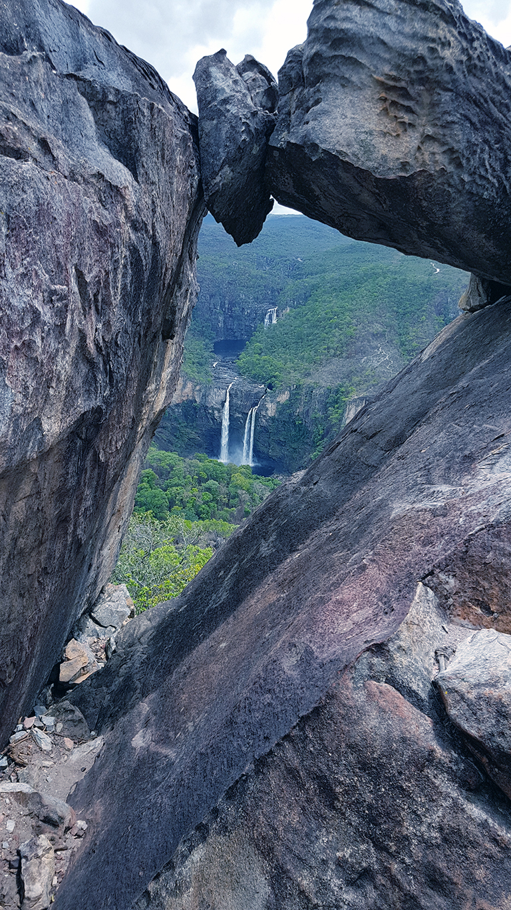

A Chapada dos Veadeiros é grande, diversa e — quando você não tem um guia para organizar — pode parecer difícil de encaixar em apenas quatro dias. Por isso, depois de anos conduzindo grupos de todas as idades e perfis, selecionei os seis atrativos que formam a combinação perfeita para estreantes: variedade de paisagens, diferentes níveis de dificuldade e nenhum quilômetro desperdiçado.
Cada dia deste roteiro foi pensado para equilibrar esforço e recompensa. Você não vai sair exausto antes do tempo, e também não vai chegar ao fim da viagem com a sensação de que poderia ter feito mais. Este é o equilíbrio certo para uma primeira vez inesquecível.
- Dia 1 — Cataratas dos Couros: trilha longa, dificuldade alta, recompensa máxima
- Dia 2 — Parque Nacional da Chapada dos Veadeiros: Saltos do Rio Preto e Cariocas, dificuldade alta
- Dia 3 — Santa Bárbara + Capivara: dificuldade média, dois mundos num mesmo dia
- Dia 4 — Vale da Lua + Segredo: dificuldade média, o grand finale do roteiro
Dia 1 — Cataratas dos Couros
Localização
Alto Paraíso de Goiás, a cerca de 15 km do centro — atrativo privado
Dificuldade
Alta. Trilha de até 12 km ida e volta, com descidas íngremes, pedras e trechos de rio a vencer.
Duração
Dia inteiro — saída cedo, retorno ao entardecer
Começo o roteiro pelas Cataratas dos Couros por um motivo simples: é o atrativo que exige mais energia física, e você ainda está com as pernas descansadas. Deixar para o final da viagem seria um erro — você merece chegar lá inteiro.
A trilha desce pela encosta do cerrado entre bromélias gigantes, ipês e pequizeiros, até revelar um dos cenários mais dramáticos da Chapada: uma sequência de quedas d'água que corre sobre lajes de quartzito formando corredores, poças e pequenas piscinas naturais encaixadas nas rochas. A água é fria, límpida, e tem aquela cor levemente esverdeada que só o cerrado sabe fazer.
O ponto mais espetacular das Cataratas dos Couros é uma laje plana de pedra sobre a qual a água desliza em lâmina fina antes de cair no abismo — o visual de cima é de tirar o fôlego, e o barulho das quedas enchendo o canyon abaixo transforma o lugar numa experiência sensorial completa. Há também uma poça de reflexo, esculpida naturalmente nas rochas, onde o céu se projeta na água parada como um espelho perfeito.

A dificuldade alta das Cataratas dos Couros se deve principalmente ao retorno: a subida de volta é longa e exigente, especialmente no calor do cerrado. Mas cada passo do caminho de volta vale o que você viu lá embaixo. Este é, sem dúvida, um dos dias mais memoráveis da viagem.
As Cataratas dos Couros são o atrativo mais distante do centro de Alto Paraíso e o que exige mais condicionamento físico. Começar por ele no primeiro dia garante que você vai aproveitar 100% — com energia, disposição e sem o peso do cansaço acumulado dos dias anteriores.
Dia 2 — Parque Nacional da Chapada dos Veadeiros
Localização
São Jorge, Município de Alto Paraíso — unidade de conservação federal
Dificuldade
Alta. Trilhas de até 14 km com exposição ao sol, terreno irregular e descidas em rocha.
Duração
Dia inteiro — entrada até 13h obrigatória
O Parque Nacional da Chapada dos Veadeiros é Patrimônio Natural da Humanidade pela UNESCO — e quando você está lá dentro, entende o porquê. São mais de 240 mil hectares de cerrado nativo praticamente intocado, com trilhas que percorrem vales profundos, mirantes de beira de canyon e as quedas d'água mais imponentes de todo o percurso.
As trilhas principais dentro do parque levam aos Saltos do Rio Preto e às Cachoeiras Cariocas. Os Saltos são duas quedas consecutivas de mais de 80 metros de altura, lançadas sobre uma fenda negra de quartzito que corta a paisagem em diagonal — um espetáculo geológico sem paralelo. A água cai com força, cria névoa no impacto e refresca o ar ao redor mesmo no dia mais quente do cerrado. As Cariocas, por sua vez, formam uma série de corredeiras e poços de banho encaixados em rochas laranja e cinza, onde é possível nadar em águas que correm entre lajes polidas como mármore.

A trilha do parque é exposta ao sol na maior parte do percurso, sem sombra nos trechos de laje. A entrada é obrigatoriamente antes das 13h — quem chega depois não entra. Por isso, organize-se para sair cedo da pousada, com estômago cheio e mochila completa. A recompensa é proporcional ao esforço.
- Entrada até as 13h — sem exceções, mesmo com guia
- Guia obrigatório para grupos que chegam após as 13h e para trilhas noturnas
- Entrada gratuita nos fins de semana e feriados para brasileiros
- Proibido alimentar animais, acampar fora das áreas designadas e sair das trilhas sinalizadas
- Sem sinal de celular na maior parte do percurso — leve seu roteiro impresso ou salvo offline
Dia 3 — Santa Bárbara + Capivara
Localização
São Jorge e arredores — atrativos privados, acesso por estrada de terra
Dificuldade
Média. Trilhas curtas a moderadas, terreno acessível, ótimo para recuperar o fôlego após os dois primeiros dias.
Duração
Manhã + tarde — é possível visitar os dois no mesmo dia
O terceiro dia é estrategicamente posicionado aqui para dar fôlego ao seu corpo depois de dois dias exigentes. Santa Bárbara e Capivara têm trilhas menores, acesso mais tranquilo e recompensas que chegam mais rápido — mas que não são menos impressionantes.
Santa Bárbara é uma das cachoeiras mais bonitas da Chapada e uma das mais bem guardadas. O acesso é por estrada de terra até um portal, e a trilha desce por mata fechada até uma cachoeira de queda dupla sobre lajes largas de quartzito com coloração rosada. O poço de banho na base é largo, profundo o suficiente para mergulhar e frio o bastante para recuperar as pernas cansadas dos dias anteriores. O entorno verde-intenso cria um contraste de cor com a rocha que parece pintado.
Depois de Santa Bárbara, o roteiro segue para a Cachoeira da Capivara — um atrativo completamente diferente em atmosfera. Aqui o rio corre mais largo, em ritmo mais calmo, sobre um leito de pedras que formam piscinas naturais em diferentes alturas. O cenário é aberto para o cerrado, com céu amplo e luz generosa. É o tipo de lugar onde você deita numa pedra, fecha os olhos e escuta apenas o barulho da água. Perfeito para um final de tarde.

Santa Bárbara e Capivara se complementam perfeitamente: o primeiro entrega emoção e altura, o segundo entrega leveza e contemplação. Visitar os dois no mesmo dia cria um ritmo ideal — intensidade de manhã, relaxamento à tarde. É o equilíbrio perfeito para a metade de uma viagem de quatro dias.
Dia 4 — Vale da Lua + Segredo
Localização
São Jorge — atrativos próximos entre si, fáceis de combinar
Dificuldade
Média. Trilhas curtas, terreno com pedras, algumas passagens molhadas. Acessível para a maioria dos perfis.
Duração
Manhã inteira — ideal sair cedo para aproveitar o Vale da Lua antes do movimento
O quarto e último dia é guardado para os dois atrativos que mais impressionam quem visita a Chapada pela primeira vez — e que mais aparecem nas fotos que os turistas levam para casa: o Vale da Lua e a Cachoeira do Segredo.
O Vale da Lua é um dos lugares mais singulares do planeta. Ao longo de séculos, o Rio São Miguel esculpiu o leito de quartzito criando formas arredondadas, côncavas, perfuradas e polidas que parecem saídas de um filme de ficção científica. As pedras têm cor entre o branco e o dourado, com veios roxos e negros que aparecem quando molhadas. A água escorre entre elas formando piscinas de diferentes tamanhos e profundidades, algumas quentes ao sol, outras refrescadas pela sombra das rochas ao redor. Caminhar pelo Vale da Lua descalço, sentindo a textura das pedras milenares sob os pés, é uma experiência de difícil tradução em palavras.

Logo depois, o roteiro segue para a Cachoeira do Segredo. O nome não é à toa: este atrativo fica relativamente escondido em relação ao circuito mais comercial da região de São Jorge, e quem não sabe onde procurar passa direto. A cachoeira desce em múltiplas quedas sobre um anfiteatro natural de rocha, formando ao final uma piscina verde-esmeralda cercada por paredes de pedra cobertas de musgo. O efeito acústico do local — com o som da água reverberando pelas paredes — cria uma atmosfera que parece de outro mundo.
Guardar o Vale da Lua e o Segredo para o último dia é uma decisão intencional. Eles entregam o que nenhum outro atrativo entrega: a sensação de que a Chapada dos Veadeiros guarda segredos que não aparecem em nenhum cartão postal — e que você encontrou todos eles.
Por que este é o roteiro certo para a primeira vez
Variedade máxima
Seis atrativos completamente diferentes em paisagem, atmosfera e tipo de trilha — sem repetição.
Progressão de dificuldade
Começa mais intenso quando você tem mais energia e termina mais leve quando o corpo já pediu descanso.
Cobre toda a região
Inclui tanto a área de Alto Paraíso quanto a de São Jorge — as duas bases da Chapada dos Veadeiros.
Natureza autêntica
Do Patrimônio da UNESCO aos atrativos privados mais secretos: todos com cenário de cerrado nativo preservado.
Fotos inesquecíveis
Cada um dos seis atrativos entrega cenários únicos e impossíveis de repetir em qualquer outro lugar do Brasil.
Deixa saudade
Quem faz este roteiro invariavelmente quer voltar — e na segunda vez, descobrimos juntos o lado B da Chapada.
Perguntas frequentes
Qual a ordem certa para fazer os atrativos?
A ordem deste roteiro foi pensada para equilibrar esforço e energia ao longo dos 4 dias: Couros (alta dificuldade) no Dia 1, Parque Nacional (alta dificuldade) no Dia 2, Santa Bárbara + Capivara (média) no Dia 3 e Vale da Lua + Segredo (média) no Dia 4. Seguir essa sequência garante que você aproveita 100% sem esgotamento prematuro.
Quanto custa a entrada nos atrativos?
Os atrativos privados (Couros, Santa Bárbara, Capivara, Vale da Lua e Segredo) cobram entrada que varia entre R$ 40 e R$ 80 por pessoa. O Parque Nacional tem entrada gratuita nos fins de semana e feriados para brasileiros — em dias úteis há cobrança. Os valores são definidos pelos proprietários e podem mudar; confirme sempre antes de visitar.
É possível fazer este roteiro sem carro?
Sim, mas exige planejamento. Alguns atrativos ficam em estradas de terra longe do centro e não têm transporte público regular. A alternativa mais prática é contratar um guia com translado incluso — o veículo já faz parte do serviço e você não precisa se preocupar com logística de estrada.
Este roteiro funciona em qualquer época do ano?
Sim. A Chapada dos Veadeiros é visitável o ano todo. No período chuvoso (novembro a março) as cachoeiras ficam mais volumosas e verdes, mas algumas trilhas podem fechar temporariamente. No período seco (abril a outubro) o acesso é mais estável e as trilhas estão sempre abertas. Cada época tem sua beleza própria.
Preciso de guia para todos os atrativos?
Para o Parque Nacional, guia é obrigatório para quem chega após as 13h e para trilhas noturnas. Para os demais atrativos, o guia não é obrigatório mas é altamente recomendado: ele conhece os melhores ângulos, os pontos secretos de cada lugar, sabe quando a correnteza está perigosa e garante que você não perde nenhum detalhe.
Pronto para viver os 4 dias?
Fale agora com a Guia Chapada Veadeiros e monte seu roteiro personalizado — com translado, guia experiente e aproveitamento de 100% em cada atrativo.
💬 Montar meu roteiro no WhatsApp